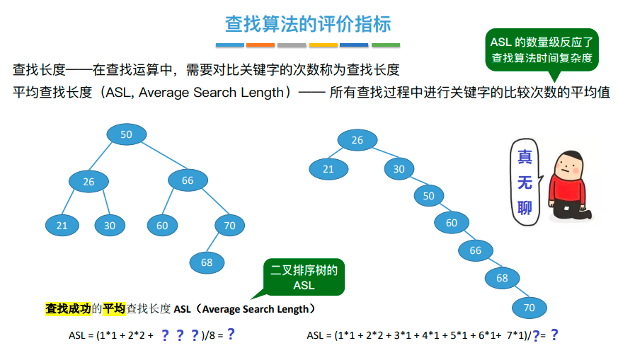

查找
查找的基本概念：
查找表不一定是一张表，查找表可以是一个"图"结构，也可以是"树"、"数组"等任意一种形式的数据结构，也就是说"查找表"不是一种具体的数据结构，而是一种统称，用于指代被我们查找的数据结构。比如即时微信的好友关系"图":
查找表【按照对其进行的操作】分两种：静态查找表、动态查找表

查找算法的评价指标:以不同的数据结构作为查找表，查找算法的性能是不同的，如何评价查找算法的性能呢？
查找成功 时的ASL

点击这里查看答案【这个题会考的】
查找失败 时的ASL
点击这里查看答案【这个题会考吗，不晓得】
查找算法之顺序查找
顺序查找算法的思想:
顺序查找算法实现 ：有哨兵、无哨兵
查找成功的情况
查找失败的情况
查找成功的情况
查找失败的情况
无哨兵
有哨兵 有哨兵时，for循环中不需要判断数组角标是否越界，理论上减少了代码运行时间
顺序查找的ASL以及优化
优化
折半查找

分块查找
思考: 如果查找的目标是 29 呢?
思考: 1%13=1 14%13=1 27%13=1 79%13=1 那么1 14 27 79这几个数字怎么存储呢?
作业：
1 求下图中两棵二叉排序树的平均查找长度ASL，在图片中画出来即可
2 把50存到链表中，在图片中画出来即可